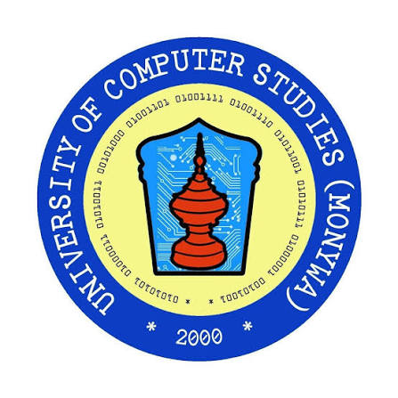
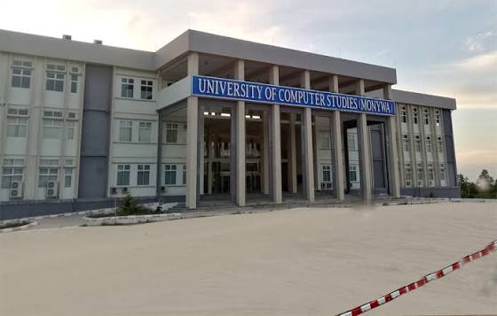
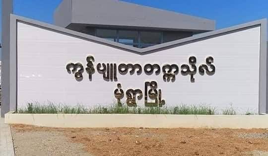
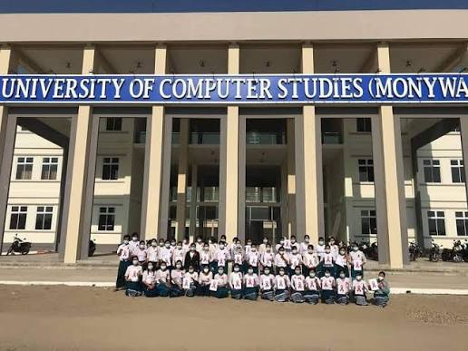
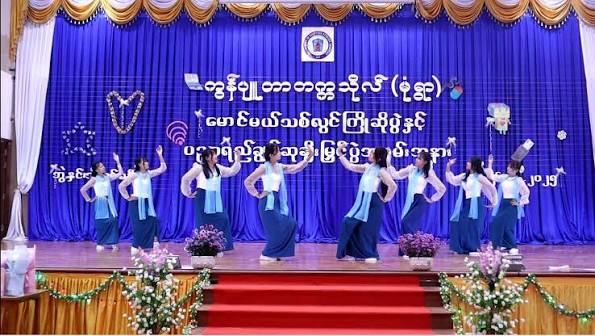

Specialized Higher Education Institution in Computing & Information Technology

The Computer University, Monywa (University of Computer Studies, Monywa) is a specialized higher education institution in computing and information technology, operating under the Department of Advanced Science and Technology, Ministry of Science and Technology.
The institution was initially established on September 21, 1998, as the Government Computer College (GCC, Monywa) and was later upgraded to university status as Computer University, Monywa on January 20, 2007. The university focuses on nurturing skilled IT professionals, software developers, and computer technical experts to support regional technological development in Sagaing Region and upper Myanmar.
Near Tharyarwaddy Village, Kyaukka Road, Monywa Township, Sagaing Region, Myanmar.
(Subject to Annual Qualification Criteria)



Near Tharyarwaddy Village, Kyaukka Road, Monywa Township, Sagaing Region, Myanmar